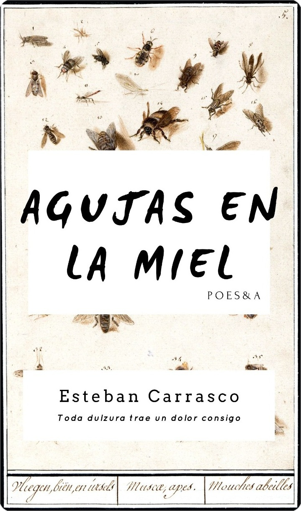

Esteban Carrasco

Índice
INTRODUCCIÓN
En la poesía habitan el titubeo, la contradicción, el contrasentido. En la palabra poética se tensa nuestra relación con el mundo y la duda se manifiesta en forma de paradoja. Cuando un poeta escribe: “Apenas soy un gesto que Vuelve / de tus manos” condensa en esos simples versos las batallas internas del sujeto: un tironeo entre ser uno o ser del otro, ser uno o volver al otro como gesto, como sombra. El poema cuestiona, incomoda, moviliza lo fijo, lo establecido, se abre a la incertidumbre. Entonces, ¿por qué leer poesía? ¿Por qué insistir en una palabra indirecta, cuestionadora, si la demanda social es la del lenguaje transparente, objetivo, linealmente racional que ofrezca garantías y de seguridades? De repente, asoma como posible respuesta a estas preguntas una imagen conflictiva, una especie de nudo que diseña el tormento amoroso como un calvario extendido en el tiempo: agujas en la miel, entre lo dulce y lo punzante se debate el amor, el deseo. El poemario de
1 Estos versos pertenecen al poema “Extraño” del tucumano Ángel Leiva. El poema completo forma parte del libro Del amor y la tierra publicado en 1967 y reeditado por el Ente de Cultura de Tucumán en 2017 como una Edición Homenaje por los 50 años de trayectoria poética del autor.
Esteban Carrasco instala el mundo de las paradojas en el centro de la escena amatoria.
El joven poeta apuesta a la poesía amorosa con el riesgo que supone incursionar por uno de los tópicos más recurrentes de la literatura. Todos alguna vez hemos leído, escrito o escuchado un poema de amor enceguecidos por la pasión, impulsados por el deseo (Pablo Neruda, Rubén Darío, Alfonsina Storni, Gonzalo Rojas, Delmira Agustini, Inés Aráoz, Ariadna Chávez, Ángel Leiva y la lista puede seguir). Escribir el amor siempre es un riesgo porque en el imaginario social se han acumulado escenas, imágenes, frases, ritmos, melodías, sonoridades, muchas de ellas cristalizadas, universalizadas, a las que inclusive un publicista apela para captar clientes en el mercado. Los universales del amor copan el cine, la música, las revistas de chimentos, las publicidades, los memes, la literatura. El poeta se ve en una encrucijada porque mover esas capas de discursos que sedimentó el tiempo con el brillo de una palabra fresca supone un gran esfuerzo. El poemario de Esteban sale victorioso en esa lucha.
Los poemas que integran Agujas en la miel vuelven al viejo tópico del amor fatal, un amor que construye dependencia entre un yo y un vos, un amor que no puede soportar la pérdida del vos, un amor que ante esa pérdida sufre y piensa en la muerte. Amor y muerte se anudan como un pañuelo que atormenta a quien escribe. Parafraseando a Quevedo en el poema “Amor constante más allá de la muerte”, las cenizas del que ama serán cenizas, pero tendrán sentido luego de la muerte, “polvo serán, más polvo enamorado”.
En esa herida que abre el deseo y la pérdida, los poemas escriben la palabra amor con fragmentos de angustia, entrampados en la ausencia y el recuerdo. Efectivamente, no se escribe para sentir algo, sino para dejar de sentir. Así lo enuncia el sujeto amoroso construido por Esteban en su poemario, un yo asfixiado por la ausencia del vos. Esa asfixia se transmite al lector. Sentimos como lectores la llaga del corazón espinado. Ahí se quedan a vivir los textos, el poemario es un regodeo, un goce en el sufrimiento. ¿No es acaso el amor una forma trágica de enterarnos de que a quien amamos nunca lo podremos tener en su totalidad? En fuga constante, el otro se nos va de las manos porque es puro tiempo, cambia a medida que pasan los días. Por eso la tragedia en los poemas de Esteban: la adolescencia, el primer amor descubren este gran drama humano y resulta insoportable.
Entonces, como una forma de placebo ante lo insoportable, en las hojas del libro se amontonan las estrategias para que la ausencia no duela. Quienes se acerquen a Agujas en la miel encontrarán el cuerpo de los enamorados hecho papel, tinta, poema, manuscrito, copia, plagio. Toda una retórica del amor que se enuncia apelando a los materiales con los que se escribe. Con palabras, agujas, lápices sin punta, lapiceras descartables se esbozan poemas de amor a la amada y -al mismo tiempo- se punzan, hieren, rayan, tachan los derroteros de un dolor que no cicatriza. Dice el poema “Caminata de rayón”: “Mi lápiz va por donde va el dolor… / y yo voy / por donde va mi lápiz”.
En esa trayectoria de suplicios que recorre el enamorado, el recuerdo se vuelve un enemigo, el poema un plagio del alma de quien no se puede tener, la escritura una cárcel, la tinta una lágrima negra y la poesía una forma de quitarse la vida. ¿Acaso no hay algo más angustiante que el recuerdo del recuerdo?
En el poemario de Esteban, la escritura poética nace de la ausencia porque hay que soportar el fantasma del que no está. El lenguaje poético es una forma de manipular el tiempo para retardar la muerte del otro, de quien amo y no me ama. La amada es una lengua arcaica que se tensiona entre el descubrimiento, el dolor de la pérdida y el sinsentido. Por eso, el poeta conjuga los verbos de esa lengua e intenta articular el mundo con ella. Lo que consigue es que la lengua se trabe con los verbos querer, soñar y esperar; la desilusión se hace más grande. La lengua, al igual que la amada, son un error de sistema, un código indescifrable, una comunicación imposible, un abecedario trunco, un trabalenguas doloroso.
Roland Barthes le dedica al ausente las siguientes líneas en Fragmentos de un discurso amoroso: “La ausencia del otro me mantiene la cabeza bajo el agua; poco a poco, me ahogo, mi aire se rarifica: en esta asfixia reconstruyo «mi verdad» y preparo lo Intratable del amor” .
2 Barthes, Roland. (1982). Fragmentos de un discurso amoroso.
Buenos Aires: Siglo XXI, pág. 59.
Aproximarse a los poemas de Agujas en la miel tiene mucho de esa asfixia que propone Barthes, necesaria para reconstruirse después de un desamor y prepararse para volver a jugar el juego siempre peligroso del deseo. El libro se cierra ambiguo: pareciera que se rompe la dependencia con ese “vos”, pero el último poema del libro (“Impune”) vuelve a armar la celada y el enredo amoroso se hace interminable: “No te detengo, / ni te contesto, / pero dime…/ ¿te vas para que te extrañe / o para que te olvide?” El sujeto amoroso sigue atrapado en las tretas del amor. Pareciera que lo necesita para hacer de la vida un vértigo, de lo real algo amorfo, cambiante. Se apuesta al amor porque si no la vida no cambia y ese es el problema, dice el poeta en “Abandono”.
Recupero la pregunta inicial: ¿por qué leer poesía? En el reverso de los poemas de Esteban, en sus bordes, late una posible respuesta: hay que leer y escribir poesía para darle a la vida la complejidad que se merece, devolverle su densidad y sus múltiples relieves. Celebro la magia de la literatura y celebro que nuevos lectores se encuentren con los textos de este joven poeta. Incompletos, abiertos, los poemas de Agujas en la miel exigen lectores que abran, cierren y vuelvan a abrir el círculo del amor, la muerte, el tiempo, la ausencia. Solo me queda invitarlos a encontrarse o desencontrarse: apropiarse de sus páginas.
>
INTRODUCCIÓN
En la poesía habitan el titubeo, la contradicción, el contrasentido. En la palabra poética se tensa nuestra relación con el mundo y la duda se manifiesta en forma de paradoja. Cuando un poeta escribe: “Apenas soy un gesto que Vuelve / de tus manos” condensa en esos simples versos las batallas internas del sujeto: un tironeo entre ser uno o ser del otro, ser uno o volver al otro como gesto, como sombra. El poema cuestiona, incomoda, moviliza lo fijo, lo establecido, se abre a la incertidumbre. Entonces, ¿por qué leer poesía? ¿Por qué insistir en una palabra indirecta, cuestionadora, si la demanda social es la del lenguaje transparente, objetivo, linealmente racional que ofrezca garantías y de seguridades? De repente, asoma como posible respuesta a estas preguntas una imagen conflictiva, una especie de nudo que diseña el tormento amoroso como un calvario extendido en el tiempo: agujas en la miel, entre lo dulce y lo punzante se debate el amor, el deseo. El poemario de Esteban Carrasco instala el mundo de las paradojas en el centro de la escena amatoria.
1 Estos versos pertenecen al poema “Extraño” del tucumano Ángel Leiva. El poema completo forma parte del libro Del amor y la tierra publicado en 1967 y reeditado por el Ente de Cultura de Tucumán en 2017 como una Edición Homenaje por los 50 años de trayectoria poética del autor.
El joven poeta apuesta a la poesía amorosa con el riesgo que supone incursionar por uno de los tópicos más recurrentes de la literatura. Todos alguna vez hemos leído, escrito o escuchado un poema de amor enceguecidos por la pasión, impulsados por el deseo (Pablo Neruda, Rubén Darío, Alfonsina Storni, Gonzalo Rojas, Delmira Agustini, Inés Aráoz, Ariadna Chávez, Ángel Leiva y la lista puede seguir). Escribir el amor siempre es un riesgo porque en el imaginario social se han acumulado escenas, imágenes, frases, ritmos, melodías, sonoridades, muchas de ellas cristalizadas, universalizadas, a las que inclusive un publicista apela para captar clientes en el mercado. Los universales del amor copan el cine, la música, las revistas de chimentos, las publicidades, los memes, la literatura. El poeta se ve en una encrucijada porque mover esas capas de discursos que sedimentó el tiempo con el brillo de una palabra fresca supone un gran esfuerzo. El poemario de Esteban sale victorioso en esa lucha.
Los poemas que integran Agujas en la miel vuelven al viejo tópico del amor fatal, un amor que construye dependencia entre un yo y un vos, un amor que no puede soportar la pérdida del vos, un amor que ante esa pérdida sufre y piensa en la muerte. Amor y muerte se anudan como un pañuelo que atormenta a quien escribe. Parafraseando a Quevedo en el poema “Amor constante más allá de la muerte”, las cenizas del que ama serán cenizas, pero tendrán sentido luego de la muerte, “polvo serán, más polvo enamorado”.
En esa herida que abre el deseo y la pérdida, los poemas escriben la palabra amor con fragmentos de angustia, entrampados en la ausencia y el recuerdo. Efectivamente, no se escribe para sentir algo, sino para dejar de sentir. Así lo enuncia el sujeto amoroso construido por Esteban en su poemario, un yo asfixiado por la ausencia del vos. Esa asfixia se transmite al lector. Sentimos como lectores la llaga del corazón espinado. Ahí se quedan a vivir los textos, el poemario es un regodeo, un goce en el sufrimiento. ¿No es acaso el amor una forma trágica de enterarnos de que a quien amamos nunca lo podremos tener en su totalidad? En fuga constante, el otro se nos va de las manos porque es puro tiempo, cambia a medida que pasan los días. Por eso la tragedia en los poemas de Esteban: la adolescencia, el primer amor descubren este gran drama humano y resulta insoportable.
Entonces, como una forma de placebo ante lo insoportable, en las hojas del libro se amontonan las estrategias para que la ausencia no duela. Quienes se acerquen a Agujas en la miel encontrarán el cuerpo de los enamorados hecho papel, tinta, poema, manuscrito, copia, plagio. Toda una retórica del amor que se enuncia apelando a los materiales con los que se escribe. Con palabras, agujas, lápices sin punta, lapiceras descartables se esbozan poemas de amor a la amada y -al mismo tiempo- se punzan, hieren, rayan, tachan los derroteros de un dolor que no cicatriza. Dice el poema “Caminata de rayón”: “Mi lápiz va por donde va el dolor… / y yo voy / por donde va mi lápiz”.
En esa trayectoria de suplicios que recorre el enamorado, el recuerdo se vuelve un enemigo, el poema un plagio del alma de quien no se puede tener, la escritura una cárcel, la tinta una lágrima negra y la poesía una forma de quitarse la vida. ¿Acaso no hay algo más angustiante que el recuerdo del recuerdo?
En el poemario de Esteban, la escritura poética nace de la ausencia porque hay que soportar el fantasma del que no está. El lenguaje poético es una forma de manipular el tiempo para retardar la muerte del otro, de quien amo y no me ama. La amada es una lengua arcaica que se tensiona entre el descubrimiento, el dolor de la pérdida y el sinsentido. Por eso, el poeta conjuga los verbos de esa lengua e intenta articular el mundo con ella. Lo que consigue es que la lengua se trabe con los verbos querer, soñar y esperar; la desilusión se hace más grande. La lengua, al igual que la amada, son un error de sistema, un código indescifrable, una comunicación imposible, un abecedario trunco, un trabalenguas doloroso.
Roland Barthes le dedica al ausente las siguientes líneas en Fragmentos de un discurso amoroso: “La ausencia del otro me mantiene la cabeza bajo el agua; poco a poco, me ahogo, mi aire se rarifica: en esta asfixia reconstruyo «mi verdad» y preparo lo Intratable del amor” .
2 Barthes, Roland. (1982). Fragmentos de un discurso amoroso.
Buenos Aires: Siglo XXI, pág. 59.
Aproximarse a los poemas de Agujas en la miel tiene mucho de esa asfixia que propone Barthes, necesaria para reconstruirse después de un desamor y prepararse para volver a jugar el juego siempre peligroso del deseo. El libro se cierra ambiguo: pareciera que se rompe la dependencia con ese “vos”, pero el último poema del libro (“Impune”) vuelve a armar la celada y el enredo amoroso se hace interminable: “No te detengo, / ni te contesto, / pero dime…/ ¿te vas para que te extrañe / o para que te olvide?” El sujeto amoroso sigue atrapado en las tretas del amor. Pareciera que lo necesita para hacer de la vida un vértigo, de lo real algo amorfo, cambiante. Se apuesta al amor porque si no la vida no cambia y ese es el problema, dice el poeta en “Abandono”.
Recupero la pregunta inicial: ¿por qué leer poesía? En el reverso de los poemas de Esteban, en sus bordes, late una posible respuesta: hay que leer y escribir poesía para darle a la vida la complejidad que se merece, devolverle su densidad y sus múltiples relieves. Celebro la magia de la literatura y celebro que nuevos lectores se encuentren con los textos de este joven poeta. Incompletos, abiertos, los poemas de Agujas en la miel exigen lectores que abran, cierren y vuelvan a abrir el círculo del amor, la muerte, el tiempo, la ausencia. Solo me queda invitarlos a encontrarse o desencontrarse: apropiarse de sus páginas.
Noche entintada
La poesía leyó en tus ojos
un sueño de pájaros cansados.
Cristales de luna
en trasnochado eclipse,
tus ojos de luna, cerrados.
Dame una noche,
mírame y dame una noche,
en la hoja blanca del cielo,
donde solo quiero escribir
tinta negra
y hacer negro
todo el cielo, lleno de tinta,
con tal de verte
noche mía,
tinta negra sobre mi noche.
Perspectiva empática
A mis ojos
el océano es un niño,
mi lágrima lo abriga.
El «Te quiero» es cariño
y el placer es amarte.
A tus ojos
el océano es inmenso,
mi lágrima insignificante.
El «Te quiero» es un capricho
y el placer solo un instante.
«El amor es ciego»
Pero ¡qué mentira!
Los dos vemos bien,
pero vemos distinto.
Brevedad
En tus labios acuna el tiempo detenido,
y beso apenas ese instante
que se encierra entre cartones
y pétalos mojados,
atrapándome los labios:
en una dulce casita de dolencias,
en un beso acaramelado,
como avioncitos de papel fatigados
que desploman sobre el agua
y no consiguen volver al vuelo.
Un beso demuestra
lo mortales que somos,
creación del tiempo.
Cualidades
Encantadora noche, brillante y día,
no dejes neblina, ni miga de pan,
limpia el mantel de malos recuerdos,
quítalos de tu mesa.
Necesaria música, apasionado tango,
sonrisa de lana, lena, lino, lona y luna,
sonrisa de «la, la, la, no te escucho».
Inteligente naturaleza, libres olas,
quita el miedo de tu mesa.
Eres encantadora, brillante, necesaria, apasionante, inteligente y libre:
Sería un error no amarte.
Cuerpo, papel y alma
Quiero besar tu cuerpo
con las palabras de mi boca.
Quiero tus:
cabellos cuerdas de guitarra,
frente álbum de nubes,
cejas arcos de guerra,
pestañas flechas de fuego,
ojos gelatina de volcán,
ojeras dormidas medias lunas,
mejillas semillero de luciérnagas,
nariz tienda de perfumes,
respiración de perfumes,
orejas caracolas sonidos de mar,
labios cráteres de marte,
lengua mermelada de rubíes,
voz libélulas de huerto,
lenguaje de cristales,
rostro nacimiento de sol,
cuello tronco savia de transpiración,
garganta nudos tallos de girasoles,
hombros libros de filosofía con tapa dura,
brazos bufanda de navidad,
codos peces pintores de cristal,
manos invernadero de caricias,
dedos plantas trepadoras,
columna cordillera vertebral,
pechos colinas sin turismo,
abdomen llanura de lienzo,
ombligo abismo del lienzo,
piernas paredes blancas mis rayones de crayón,
entrepierna rayones de crayón,
rodillas panza de gatitos,
pies colibríes azúcar algodón.
Mujer metáforas de amor.
Seguro de vida
Contigo,
mi cuerpo hasta su lecho
en tu abrigo está mi alma
y en tu cuello el testamento,
papel de mi beso
que firmo marcando fuerte
al contrato de este amor,
hasta la muerte
contigo.
Destiempo
Te esperaré
toda una vida
pero dame una señal,
dime que estás por llegar,
que en la puerta de mis parpados dormidos
estarás esperando para vernos
en cada hora de tu rutinaria retina.
Te esperaré
porque no tengo
problema alguno
con el tiempo,
pero el tiempo no espera,
inevitable paso inquebrantable,
se está yendo
y no me importaría esperarte,
si fuese por mí
pediría la eternidad a tu lado
(y me parece poco tiempo lo infinito.)
Pero la realidad es otra,
mi corazón palpita más lento.
Apresúrate, donde sea que estés,
encuéntrame y llévame contigo
antes que el tiempo lo haga.
Dóndes
Te recuerdo con desconsuelo, ya no quiero eso,
me voy
donde tu recuerdo no me alcance.
Pero no puedo escabullirme dentro del alma,
y no puedo volver a mi pecho por el miedo a verte,
no puedo desprenderme de ti
sin desprenderme de mí por completo.
¿Dónde es ese lugar?, ¿dónde está el olvido?
Soneto a las flores en otoño
He observado a los árboles dolidos
el otoño ha caído en sus miradas
en sus cortezas las tardes talladas
por dos torcidos juncos distraídos.
Si en las nubes estuvieran crecidos
estarían volando con las hadas,
sus plumas verdes bien imaginadas,
más crujen hojas de huesos molidos.
Este otoño es más fresco que el invierno.
Caen en mí poesías castañas
del árbol las hojas de su cuaderno.
Amor, el paisaje es solo testigo.
El otoño se ha llevado las flores
pero yo me he quedado contigo.